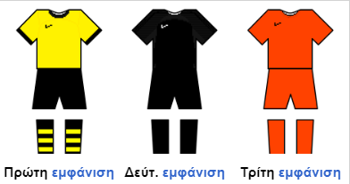

Η Αθλητική Ένωσις Κωνσταντινουπόλεως (Α.Ε.Κ.) είναι ελληνικό αθλητικό σωματείο το οποίο εδρεύει στη Νέα Φιλαδέλφεια. Ιδρύθηκε στις 13 Απριλίου του 1924 και είναι από τους μεγαλύτερους αθλητικούς συλλόγους στην Ελλάδα.
Έχει κατακτήσει 13 Πρωταθλήματα Ελλάδας και 16 Κύπελλα Ελλάδας. Σε ευρωπαϊκό επίπεδο έχει συμμετάσχει σε όλες τις μεγάλες διοργανώσεις, έχει φτάσει μια φορά στους 8 του Κυπέλλου Πρωταθλητριών (1969), μια στους 4 του Κυπέλλου ΟΥΕΦΑ (1977) και δυο φορές στους 8 του Κυπέλλου Κυπελλούχων. Έχει επίσης συμμετάσχει 5 φορές σε Ομίλους του Τσάμπιονς Λιγκ. Ιδρύθηκε στην Αθήνα και εδρεύει στο σύγχρονο Γήπεδο «Αγιά Σοφιά» (Ο.Π.Α.Π. Arena), χωρητικότητας 32.500 θέσεων που βρίσκεται στην Νέα Φιλαδέλφεια. Μέχρι πρότινος αγωνιζόταν στο Ολυμπιακό Στάδιο Αθηνών (Ο.Α.Κ.Α.), μετά την κατεδάφιση της παραδοσιακής της έδρας, του Σταδίου «Νίκος Γκούμας» στη Νέα Φιλαδέλφεια και όσο ήταν σε αναμονή της αποπεράτωσης του νέου της εκεί.
